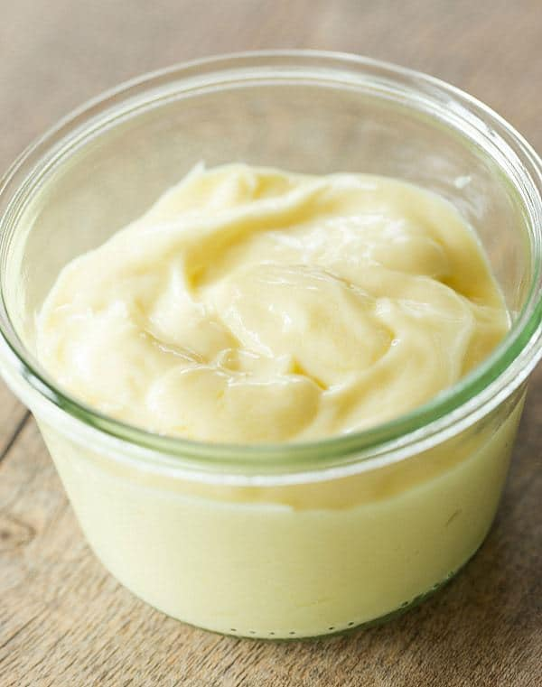

Mayonnaise

This is recipe for a mayo, that can be enjoyed with wide variety of other things.
Ingredients
- Egss
- Dijon mustard
- Fresh lemon juice
- Garlic clove
- Salt
- Vegetable oil
Steps
- Combine all ingredients except the oil in a container.
- Pour in the oil down the side of a container, so it creates a layer above created mixture.
- Start blending from bottom up to create a thick and homogenous mixture.
- Store your mayo in air-tight container for up to 2 weeks.
- You made it! You have made a homemade mayo to enjoy with vegetables, meats or anything else your heart and stomach desire!